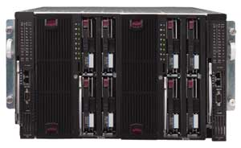

Владислав Шаров
По мнению большинства экспертов, блейд-серверы (blade, модульные, сверхтонкие серверы) - это архитектура компьютеров следующего поколения, которая снимает остроту многих существующих проблем и влияет на сам подход изготовителей оборудования к проектированию стандартных устройств. Подобные серверы действительно способны повысить плотность размещения оборудования в стойках, а кроме того, характеризуются лучшей управляемостью, меньшим энергопотреблением, более удобны в обслуживании, проще в развертывании, что в итоге приводит к снижению совокупной стоимости владения (TCO). И хотя первые воплощения серверных модулей наиболее хорошо отвечают задачам расширения в сторону внешней (клиентской) части ИТ-инфраструктуры, вероятнее всего, эта архитектура продолжит свое развитие и будет играть важную роль на всех уровнях инфраструктуры центров данных.
По существу, блейд-сервер - это компьютер, собранный на одной плате. Такая единая объединительная плата фактически содержит всю компьютерную систему, включая процессоры, память, сетевые соединения и иные электронные схемы. На некоторых серверных модулях может быть какое-то количество локальных дисковых накопителей с возможностью доступа к внешним носителям информации.
Каждый серверный модуль работает под управлением своей собственной копии ОС, следовательно, администраторы могут распределять конкретные модули между разными задачами или пользователями, а также вставлять или удалять их в горячем режиме, не мешая работе соседних модулей. Блейд-серверы вставляются в соединительную плату шасси или корпуса, который предоставляет такие совместно используемые и резервированные ресурсы, как блоки питания, вентиляторы, сетевое оборудование и кабели.
Существует несколько причин, объясняющих успех блейд-серверов. Так, системы этого класса позволяют поставщику компьютерного оборудования предоставить заказчикам решения, повышающие эффективность работы центра данных и снижающие совокупную стоимость владения. Вообще говоря, повышение эффективности работы центра данных зиждется на нескольких особенностях блейд-серверов.
Блейд-серверы относительно дешевы, поскольку, в отличие от традиционных, в них не используются индивидуальные шасси и собственная инфраструктура. Совместное использование систем питания, охлаждения, управления и кабелей несколькими серверами позволяет значительно снизить стоимость в расчете на один сервер. Теперь поставщики серверного оборудования могут интегрировать в конструкции компоненты, которые ранее пользователи должны были приобретать отдельно - это относится к платам удаленного управления, коммутаторам Ethernet и даже адаптерам KVM (Keyboard, Video, Mouse - клавиатура, видеокарта и мышь), что и обеспечивает значительное снижение стоимости аппаратного обеспечения. Совместное использование высококачественных компонентов несколькими серверами оправдано и с точки зрения надежности, поскольку такой подход уменьшает число компонентов и, соответственно, вероятность их отказа. Из-за высоких первоначальных затрат на разработку шасси блейд-серверы больше всего подходят для применения в среде центров данных с высокой концентрацией оборудования на единицу площади, а не для создания системы из нескольких удаленных друг от друга вычислительных центров с малым числом серверов в каждом.
Развертывание нескольких серверов может быть весьма трудоемкой задачей, требующей больших ресурсов. Администратор устанавливает каждый сервер в стойку, подключает сетевые и силовые кабели и устанавливает на них ПО. В среде с высокой плотностью размещения оборудования одна из основных проблем, часто встречающихся при монтаже, связана с прокладкой кабелей. Используя блейд-серверы, администратор устанавливает и подключает только шасси, поскольку индивидуальное модульное оборудование, как правило, не требует подключения кабелей. Добавление вычислительных ресурсов в этом случае сводится просто к добавлению новой платы. Наличие общего шасси минимизирует проблему прокладки кабелей, поскольку резервные блоки питания одновременно обслуживают несколько модулей. Кроме того, встроенные коммутаторы консолидируют управление сетями Ethernet и даже KVM-соединениями.
Средства автоматизированной установки ПО позволяют администраторам через сеть быстро и просто развертывать программные средства на одном или многих серверных модулях одновременно. После установки ПО на блейд-серверы администратор может полностью управлять ими, используя средства удаленного администрирования. В этом случае заказчики должны рассчитывать на то, что изготовители будут поставлять полный комплект средств для удаленной установки ПО, конфигурирования аппаратного обеспечения и управления системой. Этот инструментарий позволит заказчикам управлять блейд- и традиционными интегрированными серверами из единой структуры, что снижает издержки.
Как уже отмечалось, обслуживание отказавшего модуля сводится к замене его на исправный. Администратор также может легко создать глобальный резервный сервер горячей замены, который путем дистанционного управления может воспринимать все атрибуты и задачи блейд-сервера, нуждающегося в обслуживании или ремонте.
Поскольку помещения, в которых располагаются центры данных, обходятся очень дорого, в последние пару лет на рынке проявилась тенденция к применению оптимизированных по плотности серверных стоек. Блейд-серверы в сравнении с сегодняшними оптимизированными стоечными конструкциями серверов высотой 1U (1U = 1,75 дюйма = 4,445 см) могут повысить плотность размещения оборудования в несколько раз, в зависимости от производителя и используемой конструкции. Кроме того, поскольку каждый модуль представляет собой самостоятельный сервер, шасси позволяет объединить выполнение нескольких приложений в пределах единого корпуса. Такая консолидация также помогает достичь более высокой степени централизации компьютерных ресурсов.
Руководители центров данных должны оценить потребности каждого клиента и позаботиться о том, чтобы выделить им такие объемы ресурсов общей инфраструктуры (будь то собственное подразделение или внешний заказчик в случае поставщиков услуг), которые обеспечивали бы работу в условиях пиковой загрузки мощностей. Часто случается так, что значительное количество оборудования остается недоиспользованным, потребляя при этом энергию, выделяя тепло и расходуя средства, административные ресурсы, мощность и пространство.
Переход к архитектуре блейд-серверов и использование связанных с ними улучшений в ПО управления нагрузкой позволяет рассчитать размеры инфраструктуры по пиковой нагрузке не для индивидуальных клиентов или группы, но по потребностям всего центра данных как целого. Эта задача обычно решается с помощью ПО управления, но блейд-серверы могут повысить эффективность работы ПО за счет их низкой стоимости и упрощенного процесса добавления вычислительных ресурсов.
Для снижения расходования энергии большинство производителей блейд-серверов в некоторых своих конструкциях стараются использовать процессоры с низким потреблением энергии. Но даже в случае обычных процессоров блейд-серверы будут потреблять меньше энергии, чем обычные серверы, поскольку в них используется меньше требующих большой мощности компонентов. Кроме того, фирмы-производители могут применять более эффективные источники питания, поскольку эти блоки обслуживают множество серверов. Сверхкомпактные серверы, потребляющие меньше энергии, соответственно выделяют и меньше тепла, что, в свою очередь, уменьшает количество энергии, требующейся для охлаждения систем.
Блейд-серверы Fujitsu Siemens Computers
Первый свой блейд-сервер, модель Primergy BX300, корпорация Fujitsu Siemens Computers (http://www.fujitsu-siemens.com) выпустила в середине 2002 г. на базе низковольтной версии процессора Pentium III. Каждое серверное шасси Primergy BX300 вмещает до 20 серверных модулей высотой 3U, в которых теперь используется новый процессор Pentium M с тактовой частотой 1,4-1,6 ГГц. Системная память типа DDR SDRAM объемом до 4 Гбайт поддерживает технологию обнаружения и коррекции ошибок ECC. Два жестких диска с интерфейсом IDE, емкостью до 60 Гбайт каждый, могут объединяться в массивы RAID 0, RAID 1 и RAID 7 (JBOD). Для каждого серверного модуля предусмотрено два канала Gigabit Ethernet.
Благодаря всему этому Primergy BX300 способен обеспечивать функционирование сложных и требовательных к ресурсам систем, например, большого числа терминальных серверов или Web-серверов. Одновременно обеспечивается такое преимущество, как снижение затрат в расчете на один блейд-сервер и сокращение необходимого пространства в стойке.
Новый серверный модуль в Primergy BX300 содержит также опциональный разъем PCI для подключения к сетям Gigabit Ethernet и оптоволоконным каналам Fibre Channel. Это означает, что BX300 может предоставлять еще большую пропускную способность, обеспечивая интеграцию в корпоративные сети или предоставление дополнительных функций в инфраструктурах сетевых средств хранения данных. При внедрении блейд-серверов этот аспект часто оказывается жизненно важным для поставщиков услуг Интернета и приложений.
Шасси BX300 содержит дублирующие и подключаемые в горячем режиме модули питания и вентиляторы, а также встроенный коммутатор KVM для обеспечения прямого доступа к каждому отдельному серверному модулю. Автономно функционирующие блейд-серверы, снабженные новым процессором с энергосберегающей технологией, увеличивают производительность при обработке данных и выполнении вычислений, а устойчивое, высокопроизводительное подключение блейд-серверов Primergy к локальной сети гарантируется дублирующими модулями-коммутаторами, подключаемыми к сетям Gigabit Ethernet в горячем режиме. В то же время модули управления, тоже дублированные и подключаемые в горячем режиме, обеспечивают дистанционное администрирование через локальную сеть или подключение через выделенный последовательный порт - вне зависимости от состояния системы. Кроме того, имеется решение для установки ПО, обладающее массой возможностей для простого и эффективного распределения программ по отдельным модулям и клонирования уже установленных пакетов. Информация о состоянии и месте указывается светодиодами как на шасси, так и на серверных модулях Primergy.
В начале 2004 г. корпорация дополнила свое семейство блейд-серверов высокопроизводительной системой Primergy BX600. В число элементов конфигурации вошли также модули питания, модули-коммутаторы и модули управления. Каждый корпус (полка) Primergy BX600 содержал до 10 серверных модулей, включающих процессор Intel Xeon с тактовой частотой 2,8 ГГц.
Блейд-серверы Primergy BX600 были созданы прежде всего для сферы приложений среднего звена и потому могут служить платформой буквально для всех приложений центра обработки данных. Они выполняют функции и высокопроизводительных серверов приложений, и серверов баз данных малого и среднего размера благодаря большому объему оперативной памяти и множеству разнообразных разъемов, обеспечивающих подключение к локальной сети по стандарту Gigabit Ethernet, систем хранения через порты 2 Гбит/с Fibre Channel и устройств резервного копирования по стандарту SCSI.
На Primergy BX600 обеспечивается функционирование не только классических приложений среднего звена, таких, как Microsoft Exchange или Lotus Notes, но и приложений корпоративного класса, включая FlexFrame for mySAP Business Suite, традиционных SAP-приложений, Siebel, Baan, I2 и им подобных. Primergy BX600 служит хорошей платформой для таких баз данных, как Oracle 9iRAC и особенно версия Oracle 10g, поддерживающих масштабирование. Все остальные компоненты Primergy BX600 (например, интегрированные коммутаторы Ethernet) обеспечивают достаточно высокую производительность и пропускную способность.
| Серверы Fujitsu Siemens Primergy BX600.
|
В конце лета 2004 г. Fujitsu Siemens объявила о начале продаж четырехпроцессорных моделей Primergy BX600, пригодных для компьютерных центров с высокими требованиями к вычислительной мощности. Кроме того, Primergy BX600 отвечает требованиям современных корпоративных компьютерных центров, Интернет-провайдеров и поставщиков услуг аренды приложений. Возможность установки до 30 четырехпроцессорных серверов в 19-дюйм стойку высотой 46U обеспечивает оптимальное использование площади помещений компьютерных центров. Блейд-серверы включают дополнительные компоненты, обеспечивающие надежность и отказоустойчивость, а также удобство и эффективность управления. Поставляемый в комплекте набор Primergy Server Management Suite позволяет избежать неполадок при установке и настройке конфигурации систем.
В модуле теперь может быть установлено до четырех процессоров Intel Xeon MP, до 16 Гбайт оперативной памяти, а также четыре канала Gigabit Ethernet и до четырех каналов Fibre Channel для подключения систем SAN. Каждый серверный модуль включает два жестких диска Ultra320 SCSI с возможностью горячей установки емкостью по 146 Гбайт каждый. Для их установки не требуется отдельный модульный разъем.
Поскольку в четырехпроцессорных модулях используется та же самая инфраструктура Primergy BX600, что и в двухпроцессорных, их можно устанавливать в одном корпусе (смешанные конфигурации). Корпус Primergy BX600 может содержать до пяти четырехпроцессорных серверов или до десяти двухпроцессорных.
Блейд-серверы HP
Корпорация HP (http://www.hp.com) еще весной 2002 г. представила объединенное семейство сверхкомпактных серверов, включавшее линейки одноплатных серверов HP Server BH и HP ProLiant BL. По оценкам экспертов, с двумя линейками блейд-серверов HP могла продемонстрировать самый всеобъемлющий и мощный в отрасли портфель продуктов, технологий, программных средств администрирования, инструментов, услуг и партнерских отношений в данной области.
Первой моделью в серии ProLiant BL e-Class был сервер BL10e, выпущенный корпорацией Compaq (слившейся впоследствии с HP) в начале 2002 г. В стойку высотой 42U можно было установить до 280 таких серверов (14 полок по 20 серверов в каждой). В настоящее время в ProLiant BL e-Class (модель BL10e G2) используется процессор Pentium M 1 ГГц ULV со сверхнизким рабочим напряжением. Сервер оснащен ОЗУ SDRAM объемом от 512 Мбайт до 1 Гбайт, жестким диском емкостью 40 Гбайт и двумя портами 10/100 Ethernet.
Разработанная корпорацией HP стратегия адаптивной инфраструктуры ставит своей целью предоставить компаниям возможность оперативно и эффективно реагировать на перемены и оптимизировать клиентские инфраструктуры с расчетом на будущее. Такую возможность наглядно демонстрируют новые аппаратные и программные технологии, в частности, архитектура блейд-серверов ProLiant BL.
Сегодня линейка HP ProLiant BL - это самый обширный в отрасли набор блейд-серверов и технологий, оптимизированных для решения задач, с которыми сталкиваются центры обработки данных, сервис-провайдеры и телекоммуникационные операторы. Блейд-серверы от HP позволяют уменьшить стоимость и сложность информационных систем за счет комплексного управления и более полной реализации возможностей серверов и средств хранения данных. Корпорация предлагает широкий выбор блейд-серверов, обеспечивающих работу фронтальных, промежуточных и "тыловых" программных средств и систем.
Так, блейд-серверы HP ProLiant BL10e G2 предназначены для работы на границе сети и инфраструктурных приложений, например, в качестве Web-серверов, межсетевых экранов, прокси- или кэширующих серверов. Эта модель до сих пор занимает лидирующее положение среди серверов подобного класса по части эффективности энергопотребления. В корпус размером 3U можно установить 20 блейд-серверов ProLiant BL10e, а в полноразмерную стойку 42U - 280 серверов. Таким образом, оптимизируется использование дорогостоящего пространства вычислительных центров, а также энергопотребление и охлаждение оборудования при минимальном количестве прокладываемых кабелей.
Блейд-серверы HP ProLiant BL20p G2 предназначаются для использования в качестве массивов терминальных серверов, систем Web-хостинга, электронной коммерции и для предоставления услуг потокового мультимедиа. Одновременно они способны обеспечить защиту важной информации, хранящейся на серверах. Каждый модуль поддерживает до двух процессоров Xeon MP с тактовой частотой 2,8-3,2 ГГц. Объем оперативной памяти составляет от 512 Мбайт до 8 Гбайт; емкость внутренних SCSI-накопителей - 292 Гбайт.
Особо стоит выделить систему ProLiant BL30p, которая, по утверждению разработчиков, не имеет аналогов среди блейд-серверов других производителей, например, по изящности решения проблемы повышения плотности вычислительной мощности. Дело в том, что в одной стойке помещается 96 двухпроцессорных компьютеров - это рекордный показатель для блейд-серверов на базе процессоров Xeon. В модулях используются процессоры с тактовыми частотами от 3,06 до 3,2 ГГц. Как и BL10e, этот двухпроцессорный сервер имеет высоту 3U, но размещается парами в полке размером 6U. Система хорошо подходит для приложений промежуточного уровня, которым нужна высокая процессорная мощность. Как опция в ней предусмотрена установка двух внутренних 2,5-дюйм жестких дисков ATA (вместо занимающих больше места, хотя и более производительных SCSI-накопителей в ProLiant BL20p). Емкость внутренних накопителей составляет 120 Гбайт, а объем оперативной памяти достигает 8 Гбайт. Система ориентирована на работу с SAN и поддерживает загрузку с внешних дисков, поэтому может использоваться в бездисковой конфигурации.
Стоит отметить, что корпорация HP первой среди крупных производителей серверов представила четырехпроцессорные блейд-серверы. Этому событию немало способствовало лидирующее положение корпорации на мировом рынке серверов на базе процессоров Intel. Сервер HP ProLiant BL40p пополнил ассортимент блейд-серверов, в который входят одно-, двух- и четырехпроцессорные модели.
Сервер HP ProLiant BL40p предназначен для систем, от которых требуется поддержка нескольких процессоров и возможность подключения к SAN, - таких, как крупные корпоративные массивы серверов приложений, системы обмена сообщениями, CRM и ERP, требующих к тому же надежной платформы с высокой готовностью. Данный сервер включает до четырех процессоров Xeon MP 2,0 ГГц (или 3,0 ГГц), память PC2100 ECC SDRAM (максимальный объем 12 Гбайт), контроллер Integrated Smart Array 5i Plus и четыре SCSI-диска с горячей заменой (суммарная емкость 587 Гбайт). Использование ProLiant BL40p вместе с другими серверами семейства BL позволяет сократить затраты благодаря удаленному управлению из любой точки земного шара с помощью усовершенствованной версии Integrated Lights-Out (iLO). Кроме того, интегрированная система управления и полная совместимость с Insight Manager Suite обеспечивают максимальное виртуальное присутствие, позволяют осуществлять контроль, администрирование и отслеживать состояние системы с визуализацией всех приложений на уровне каждого блейд-сервера. Дублированный интерфейс Fibre Channel реализует все преимущества внешнего хранения данных в сети. Внедрив SAN, заказчики смогут улучшить доступность данных, легко масштабировать мощность и сократить расходы на управление за счет консолидации дисковых ресурсов. Кроме того, проводимая HP конвергенция сетей SAN и NAS помогает построить архитектуру хранения, включающую приложения, базы данных и функции файл-серверов. HP рекомендует использовать системы SAN, выпускаемые под маркой HP StorageWorks, и сетевые хранилища данных NAS, специально оптимизированные для работы с блейд-серверами компании.
|  | Серверы HP ProLiant BL40p.
|
При возможности подключения к SAN корпоративные приложения могут работать на блейд-серверах, что будет способствовать снижению затрат на управление ими, а также реализации преимуществ интегрированной системы, включающей серверы, сеть и средства хранения данных. Кроме того, возможность подключения к SAN позволяет наращивать емкость систем хранения данных до сотен терабайт; расширять поддержку корпоративных вычислительных систем; подключать блейд-серверы и базы данных и к SAN, и к комбинированным системам NAS/SAN (для хранения как файловых, так и блочных данных); реализует преимущества управления сетевыми средствами хранения данных при помощи программного пакета HP OpenView Storage Area Manager.
Серверы ProLiant BL p- и е-классов обладают обратной совместимостью с уже существующими корпусами BL, что способствует защите инвестиций заказчиков. Всеми блейд-серверами семейства HP ProLiant BL легко управлять при помощи программных средств HP ProLiant Essentials, HP Insight Manager 7 и HP OpenView. HP ProLiant Essentials Rapid Deployment Pack обеспечивает автоматическое конфигурирование и установку ОС и приложений на сотни серверов одновременно. Эти технологии специально оптимизированы для интеграции с программным пакетом HP OpenView, что гарантирует беспрепятственное управление инфраструктурами ИТ, сетями передачи речи и данных.
Блейд-серверы IBM
Корпорация IBM (http://www.ibm.com) сравнительно поздно вышла на рынок блейд-серверов, анонсировав свою первую модель из серии BladeCenter осенью 2002 г. Тем не менее, как свидетельствуют данные аналитиков, в настоящее время она, как обычно, в числе лидеров.
Как уже отмечалось, преимущества блейд-серверов по сравнению с обычными тонкими серверами не ограничиваются только более высокой плотностью размещения и снижением стоимости (благодаря уменьшению числа кабелей и других компонентов серверного комплекса). Едва ли не самый большой выигрыш от применения блейд-серверов связан с сокращением совокупной стоимости владения за счет высокой гибкости и масштабируемости этих систем, их лучшей управляемости и обслуживаемости.
IBM, в частности, предназначает свою систему BladeCenter для обслуживания серверов электронной почты и организации совместной работы Microsoft Exchange и Lotus Domino, терминальных серверов Citrix MetaFrame, Web-приложений, а также баз данных и интерфейсных компонентов ERP-систем. Кроме того, блейд-серверы IBM пригодны для построения высокопроизводительных Linux-кластеров и обслуживания DNS-серверов, кэширования и балансировки нагрузки.
В настоящее время линейка BladeCenter включает три серверных модуля, которые выполнены в конструктиве 7U и могут устанавливаться в одной полке (шасси). Это созданные на основе Intel Xeon (c поддержкой EM64T) двухпроцессорный HS20 и четырехпроцессорный HS40, а также использующий 64-разрядный процессор PowerPC 970 двухпроцессорный JS20.
| Платформа IBM BladeCenter.
|
Стоит отметить, что Intel (http://www.intel.com) сочла конструкцию BladeCenter наиболее перспективной для блейд-серверов, и на одном из своих Форумов для разработчиков (IDF) корпорация представила разработанную совместно с IBM серию предназначенных для OEM-партнеров строительных блоков Intel Enterprise Server Blade. Сегодня она включает двухпроцессорный вычислительный модуль Intel Server Compute Blade SBLX52 и четырехпроцессорный SBX44 (аналоги IBM BladeCenter HS20 и HS40 соответственно).
Несмотря на общие корни, у блейд-серверов IBM и Intel есть ряд различий. Так, если для управления BladeCenter применяется стандартный для серверов IBM eServer xSeries фирменный пакет программ IBM Director, то в Intel Server Blade аналогичные функции выполняет ПО Intel Server Management, а для автоматизации развертывания больших конфигураций блейд-серверов используется разработанная компанией Veritas Software утилита OpForce.
Кроме серверных модулей, в шасси BladeCenter можно установить модули расширения, которые позволяют применять интерфейсы Myrinet и Fibre Channel, увеличить пропускную способность подсистемы Ethernet, подключать дополнительные диски SCSI и ATA 100. Кроме того, в качестве опций для шасси BladeCenter поставляются четырехпортовый коммутатор Gigabit Ethernet, разработанный компанией Nortel Networks коммутатор Layer 2-7 Gigabit Ethernet, двухпортовый коммутатор Fibre Channel, модуль Optical Pass-thru, второй модуль управления/KVM, источник питания 1800 Вт и специальный модуль для уменьшения шума.
IBM предлагает также ПО для управления энергопотреблением PowerExecutive. Это первый продукт в рамках стратегии, направленной на сокращение расходов на электроэнергию в центрах обработки данных. ПО PowerExecutive представляет собой часть модуля управления платформой BladeCenter и позволяет ИТ-службам лучше управлять энергопотреблением блейд-серверов.
Объединяя усилияКорпорация IBM сделала еще один шаг в направлении дальнейшей популяризации платформы блейд-серверов BladeCenter. В начале сентября прошлого года было объявлено о том, что некоторые технические спецификации, необходимые для реализации проектов с использованием технологий BladeCenter, становятся открытыми. Таким образом, в IBM рассчитывают несколько облегчить жизнь разработчикам компонентов и дополнительного оборудования для модульных платформ (коммутаторы, адаптеры и т. д.), а также решений на их основе (например, модульных консолей и телекоммуникационных систем). Напомним, что сама платформа BladeCenter допускает объединение в рамках одного комплекса блейд-серверов, систем хранения данных и сетевого оборудования, а ее основное назначение - предоставить системным администраторам возможность управлять серверами из одной точки. По оценке руководства подразделения IBM eServer BladeCenter, этот правильный путь в конечном счете будет способствовать расширению всего рынка блейд-систем. Сегодня корпорация оказалась впереди даже пионеров этого рынка и хочет, чтобы его развитие ни в коем случае не останавливалось. Стратегия IBM направлена на создание экосистемы BladeCenter за счет привлечения новых партнеров, которые, в свою очередь, смогут значительно расширить спектр предлагаемых пользователям решений. Немаловажно, что соавтором инициативы "Голубого Гиганта" выступила корпорация Intel. Как отметили наблюдатели, время для своего шага в IBM и Intel выбрали исключительно удачно. В IDC, к примеру, считают, что в 2007 г. около четверти всего рынка серверов будет принадлежать блейд-системам. Если удастся сейчас привлечь независимых разработчиков на свою сторону, через некоторое время это может принести существенные дивиденды.
|
Блейд-серверы Kraftway
Компания Kraftway (http://www.kraftway.ru), один из признанных лидеров российского рынка компьютерной техники, впервые представила новый класс серверов на базе процессоров Intel Xeon под торговой маркой GEG Express Blade в сентябре 2003 г. Эти серверы были созданы на базе корпуса Intel Enterprise Server Blade высотой 7U и вмещали до 14 вычислительных модулей (SBXL52), поддерживающих один или два процессора Xeon каждый. Заметим, что формат Intel Enterprise Server Blade позволяет создавать мощные и гибкие высокоинтегрированные вычислительные решения. Каждый вычислительный модуль поддерживал от 4 до 8 Гбайт оперативной памяти стандарта DDR200 с кодом коррекции ошибок ECC, занимал один разъем корпуса и имел два интегрированных канала Gigabit Ethernet для подключения к сети. Дополнительно можно было установить двухканальный модуль Fibre Channel 2 Гбит/с, который обеспечивал бы интеграцию сервера в существующие инфраструктуры SAN.
 |
Серверы Kraftway GEG Express Blade.
|
В феврале 2004 г. Kraftway, будучи на тот момент еще единственным российским производителем блейд-серверов, анонсировала четырехпроцессорный модуль (SBX44) на базе процессоров Intel Xeon MP с тактовой частотой до 2,80 (3) ГГц. Толщина такого модуля была в два раза больше, чем у объявленной осенью 2003 г. двухпроцессорной конфигурации. В универсальное серверное шасси GEG Express Blade устанавливается до семи таких модулей. При сохранении плотности решения - до 28 процессоров в едином 19-дюймовом шасси высотой 7U - применение четырехпроцессорных модулей позволяет получить существенный прирост общей производительности системы за счет перехода на процессоры с MP-архитектурой.
Новый модуль оснащен четырьмя контроллерами Gigabit Ethernet и допускает установку двух жестких дисков ATA 100 или Ultra320 SCSI (при использовании специальной внешней корзины, крепящейся на модуль), которые могут объединяться в RAID уровня 0 или 1. Кроме того, новый модуль может оснащаться дополнительными "быстрыми" интерфейсами, такими, как Fibre Channel и Myrinet.
С появлением новой четырехпроцессорной реализации модулей система GEG Express Blade благодаря своей высокоинтегрированной конструкции демонстрирует отличные соотношения объем/производительность и цена/производительность.
Обладая высокой удельной производительностью на единицу объема, компактные системы GEG Express Blade позволяют заказчикам с большими серверными парками более эффективно использовать имеющиеся площади и существенно экономить как рабочее пространство, так и потребление электроэнергии. Управление всеми модулями сервера GEG Express Blade с единой консоли значительно снижает расходы на администрирование системы. Благодаря высокой производительности системы GEG Express Blade на основе четырехпроцессорных модулей при работе с большими информационными массивами (например, с объемными базами данных) ее можно с успехом применять в научно-исследовательских учреждениях, в компаниях телекоммуникационной, банковской и производственной отраслей.
Отличительная особенность Kraftway GEG Express Blade состоит в возможности комбинирования двух- и четырехпроцессорных модулей в одном шасси и установки различных ОС на разные модули в зависимости от выполняемых задач. Все выпускающиеся модули сертифицированы на совместимость с Microsoft Windows 2003 Server и Linux Red Hat. Серверы GEG Express Blade поставляются с пятилетней гарантией, причем в течение первых двух лет обслуживание системы проводится на месте ее эксплуатации.
ПО Intel Deployment Manager позволяет автоматизировать многие задачи администрирования, связанные с контролем работы систем, установкой ПО и разнообразными обновлениями версий BIOS, Firmware и т. д. блейд-серверов с помощью интеллектуальной программной среды. Можно, например, автоматизировать следующие задачи:
- обнаружение изменений аппаратной и программной конфигурации;
- отслеживание изменений лицензий на ПО (позволяет эффективно управлять лицензиями - добавлять их, удалять, перемещать);
- одновременная установка ПО на несколько серверов;
- групповое обновление версий BIOS и Firmware;
- эффективное управление настройками локальной сети, логическое деление на группы по заранее заданным признакам, разграничение прав пользователей на управление всем комплексом;
- управление всеми ресурсами блейд-серверов из одного места.
Традиционно каждую из вышеперечисленных задач выполняют разные группы внутри организации. Как только группа завершила одну задачу, за работу принимается другая, и так до тех пор, пока все необходимые настройки и установки не будут завершены. Intel Deployment Manager позволяет полностью автоматизировать такие процессы, исключив все ручные операции.
Сегодня в продуктовой линейке компании есть и GEG Express Blade-N - система модульного класса высотой 3U, содержащая до 18 серверных модулей с возможностью горячей замены и общим управлением. Она в первую очередь предназначена для использования в вычислительных системах высокой плотности. При монтаже GEG Express Blade-N в стандартный серверный шкаф высотой 42U в системе разместятся 252 серверных модуля с процессорами Intel Pentium III, сетевыми интерфейсами 100/1000 Мбит/с, жесткими дисками и стандартными слотами расширения PCI.